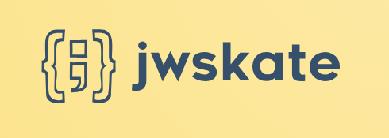

home
¶


A Pythonic implementation of the JOSE set of IETF specifications: Json Web Signature, Keys, Algorithms, Tokens and Encryption (RFC7515 to 7519), hence the name JWSKATE, and their extensions ECDH Signatures (RFC8037), JWK Thumbprints (RFC7638), and JWK Thumbprint URI (RFC9278), with respects to JWT Best Current Practices (RFC8725).
- Free software: MIT
- Repository: https://github.com/guillp/jwskate/
- Documentation: https://guillp.github.io/jwskate/
Here is a quick usage example: generating a private RSA key, signing some data, then validating that signature with the matching public key:
1 2 3 4 5 6 7 8 9 10 11 12 13 14 15 16 17 18 19 20 21 22 23 | |
The result of this print will look like this (with the random parts abbreviated to ... for display purposes only):
1 2 3 4 5 6 7 8 9 10 11 12 13 | |
Now let's sign a JWT containing arbitrary claims, this time using an Elliptic Curve (EC) key:
1 2 3 4 5 6 7 8 9 10 11 12 13 14 15 16 17 18 19 20 21 22 23 24 25 26 27 28 29 30 31 32 33 34 35 36 37 38 39 40 41 | |
Now let's sign a JWT with the standardized lifetime, subject, audience and ID claims, plus arbitrary custom claims:
1 2 3 4 5 6 7 8 9 10 11 | |
The generated JWT will include the standardized claims (iss, aud, sub, iat, exp and jti), together with the
extra_claims provided to .sign():
1 2 3 4 5 6 7 8 9 | |
Features¶
- Simple, Clean, Pythonic interface
- Convenience wrappers around
cryptographyfor all algorithms described in JWA - Json Web Keys (JWK) loading, dumping and generation
- Arbitrary data signature and verification using Json Web Keys
- Json Web Signatures (JWS) signing and verification
- Json Web Encryption (JWE) encryption and decryption
- Json Web Tokens (JWT) signing, verification and validation
- 100% type annotated, verified with
mypy --strict - nearly 100% code coverage
- Relies on cryptography for all cryptographic operations
- Relies on BinaPy for binary data manipulations
Supported Token Types¶
| Token Type | Support |
|---|---|
| Json Web Signature (JWS) | ☑ Compact ☑ JSON Flat ☑ JSON General |
| Json Web Encryption (JWE) | ☑ Compact ☐ JSON Flat ☐ JSON General |
| Json Web Tokens (JWT) | ☑ Signed ☑ Signed and Encrypted |
Supported Signature algorithms¶
| Signature Alg | Description | Key Type | Reference | Note |
|---|---|---|---|---|
HS256 |
HMAC using SHA-256 | oct |
RFC7518, Section 3.2 | |
HS384 |
HMAC using SHA-384 | oct |
RFC7518, Section 3.2 | |
HS512 |
HMAC using SHA-512 | oct |
RFC7518, Section 3.2 | |
RS256 |
RSASSA-PKCS1-v1_5 using SHA-256 | RSA |
RFC7518, Section 3.3 | |
RS384 |
RSASSA-PKCS1-v1_5 using SHA-384 | RSA |
RFC7518, Section 3.3 | |
RS512 |
RSASSA-PKCS1-v1_5 using SHA-512 | RSA |
RFC7518, Section 3.3 | |
PS256 |
RSASSA-PSS using SHA-256 and MGF1 with SHA-256 | RSA |
RFC7518, Section 3.5 | |
PS384 |
RSASSA-PSS using SHA-384 and MGF1 with SHA-384 | RSA |
RFC7518, Section 3.5 | |
PS512 |
RSASSA-PSS using SHA-512 and MGF1 with SHA-512 | RSA |
RFC7518, Section 3.5 | |
ES256 |
ECDSA using P-256 and SHA-256 | EC |
RFC7518, Section 3.4 | |
ES384 |
ECDSA using P-384 and SHA-384 | EC |
RFC7518, Section 3.4 | |
ES512 |
ECDSA using P-521 and SHA-512 | EC |
RFC7518, Section 3.4 | |
ES256K |
ECDSA using secp256k1 curve and SHA-256 | EC |
RFC8812, Section 3.2 | |
EdDSA |
EdDSA signature algorithms | OKP |
RFC8037, Section 3.1 | Ed2219 and Ed448 are supported |
HS1 |
HMAC using SHA-1 | oct |
https://www.w3.org/TR/WebCryptoAPI | Validation Only |
RS1 |
RSASSA-PKCS1-v1_5 with SHA-1 | RSA |
https://www.w3.org/TR/WebCryptoAPI | Validation Only |
none |
No digital signature or MAC performed | RFC7518, Section 3.6 | Not usable by mistake |
Supported Encryption algorithms¶
| Signature Alg | Description | Reference |
|---|---|---|
A128CBC-HS256 |
AES_128_CBC_HMAC_SHA_256 authenticated encryption algorithm | RFC7518, Section 5.2.3 |
A192CBC-HS384 |
AES_192_CBC_HMAC_SHA_384 authenticated encryption algorithm | RFC7518, Section 5.2.4 |
A256CBC-HS512 |
AES_256_CBC_HMAC_SHA_512 authenticated encryption algorithm | RFC7518, Section 5.2.5 |
A128GCM |
AES GCM using 128-bit key | RFC7518, Section 5.3 |
A192GCM |
AES GCM using 192-bit key | RFC7518, Section 5.3 |
A256GCM |
AES GCM using 256-bit key | RFC7518, Section 5.3 |
Supported Key Management algorithms¶
| Signature Alg | Description | Key Type | Reference | Note |
|---|---|---|---|---|
RSA1_5 |
RSAES-PKCS1-v1_5 | RSA |
RFC7518, Section 4.2 | Unwrap Only |
RSA-OAEP |
RSAES OAEP using default parameters | RSA |
RFC7518, Section 4.3 | |
RSA-OAEP-256 |
RSAES OAEP using SHA-256 and MGF1 with SHA-256 | RSA |
RFC7518, Section 4.3 | |
RSA-OAEP-384 |
RSA-OAEP using SHA-384 and MGF1 with SHA-384 | RSA |
https://www.w3.org/TR/WebCryptoAPI | |
RSA-OAEP-512 |
RSA-OAEP using SHA-512 and MGF1 with SHA-512 | RSA |
https://www.w3.org/TR/WebCryptoAPI | |
A128KW |
AES Key Wrap using 128-bit key | oct |
RFC7518, Section 4.4 | |
A192KW |
AES Key Wrap using 192-bit key | oct |
RFC7518, Section 4.4 | |
A256KW |
AES Key Wrap using 256-bit key | oct |
RFC7518, Section 4.4 | |
A128GCMKW |
Key wrapping with AES GCM using 128-bit key | oct |
RFC7518, Section 4.7 | |
A192GCMKW |
Key wrapping with AES GCM using 192-bit key | oct |
RFC7518, Section 4.7 | |
A256GCMKW |
Key wrapping with AES GCM using 256-bit key | oct |
RFC7518, Section 4.7 | |
dir |
Direct use of a shared symmetric key | oct |
RFC7518, Section 4.5 | |
ECDH-ES |
ECDH-ES using Concat KDF | EC |
RFC7518, Section 4.6 | |
ECDH-ES+A128KW |
ECDH-ES using Concat KDF and "A128KW" wrapping | EC |
RFC7518, Section 4.6 | |
ECDH-ES+A192KW |
ECDH-ES using Concat KDF and "A192KW" wrapping | EC |
RFC7518, Section 4.6 | |
ECDH-ES+A256KW |
ECDH-ES using Concat KDF and "A256KW" wrapping | EC |
RFC7518, Section 4.6 | |
PBES2-HS256+A128KW |
PBES2 with HMAC SHA-256 and "A128KW" wrapping | password |
RFC7518, Section 4.8 | |
PBES2-HS384+A192KW |
PBES2 with HMAC SHA-384 and "A192KW" wrapping | password |
RFC7518, Section 4.8 | |
PBES2-HS512+A256KW |
PBES2 with HMAC SHA-512 and "A256KW" wrapping | password |
RFC7518, Section 4.8 |
Supported Elliptic Curves¶
| Curve | Description | Key Type | Usage | Reference |
|---|---|---|---|---|
P-256 |
P-256 Curve | EC |
signature, encryption | RFC7518, Section 6.2.1.1 |
P-384 |
P-384 Curve | EC |
signature, encryption | RFC7518, Section 6.2.1.1 |
P-521 |
P-521 Curve | EC |
signature, encryption | RFC7518, Section 6.2.1.1 |
secp256k1 |
SECG secp256k1 curve | EC |
signature, encryption | RFC8812, Section 3.1 |
Ed25519 |
Ed25519 signature algorithm key pairs | OKP |
signature | RFC8037, Section 3.1 |
Ed448 |
Ed448 signature algorithm key pairs | OKP |
signature | RFC8037, Section 3.1 |
X25519 |
X25519 function key pairs | OKP |
encryption | RFC8037, Section 3.2 |
X448 |
X448 function key pairs | OKP |
encryption | RFC8037, Section 3.2 |
Why a new lib?¶
There are already multiple modules implementing JOSE and Json Web Crypto related specifications in Python. However, I have been dissatisfied by all of them so far, so I decided to come up with my own module.
Not to say that those are bad libs (I actually use jwcrypto myself for jwskate unit tests), but they either don't
support some important features, lack documentation, or more generally have APIs that don't feel easy-enough,
Pythonic-enough to use. See Design below for some of the design decisions that lead to jwskate.
Design¶
Tokens are objects¶
Since JSON Web Tokens (JWT) are more and more used, JWT generation and validation must be as easy to do as possible. The
Jwt class wraps around a JWT value to allow easy access to its headers, claims and signature, and exposes methods to
easily verify the signature.
1 2 3 4 5 6 7 8 9 10 11 12 13 | |
Jwt instances always represent a syntactically valid JWT. If you try to initialize one with a malformed value, you
will get a InvalidJwt exception, with an helpful error message:
1 2 3 4 | |
Jwt may be objects, but they are easy to serialize into their representation. Use either str() or bytes()
depending on what type of value you need, or the value attribute:
1 2 3 4 5 6 7 8 | |
The same is true for JWS and JWE tokens.
Headers are auto-generated¶
When signing a JWS, JWE or JWT, the headers are autogenerated by default, based on the used key and algorithm.
You may add your own custom headers using the extra_headers parameter, and/or set a custom typ header with the parameter of the same name:
1 2 3 4 5 6 7 8 9 10 11 12 13 14 | |
If, for testing purposes, you need to fully control which headers are included in the JWT, even if they are inconsistent,
you can use Jwt.sign_arbitrary():
1 2 3 4 5 6 7 8 9 10 11 12 13 14 15 16 17 18 | |
Jwk as thin wrapper around cryptography keys¶
Jwk keys are just thin wrappers around keys from the cryptography module, or, in the case of symmetric keys,
around bytes. But, unlike cryptographykeys, they present a consistent interface for signature creation/verification,
key management, and encryption/decryption, with all available algorithms.
Everywhere a key is required as parameter, you may pass either a raw cryptography key instance, or a Jwk instance
(which is actually a thin wrapper around a cryptography key), or a Mapping representing the JWK key.
Jwk are UserDict instances¶
JWK are specified as JSON objects, which are parsed as dict in Python. The Jwk class in jwskate is actually a
UserDict subclass, which is very similar to a standard dict. So you can use it exactly like you would use a dict:
you can access its members, dump it back as JSON, etc. The same is true for Signed or Encrypted Json Web tokens in JSON
format. However, you cannot change the key cryptographic materials, since that would lead to unusable keys.
Note that the keys with a JwkSet are converted to instances of Jwk on initialization. This may introduce an issue
if you try to serialize it to JSON with the standard json module, which does not handle UserDict by default. You may
either use JwkSet.to_json() to get a JSON-serialized string, or JwkSet.to_dict() to get a standard dict, that is
serializable by the standard json module.
JWA Wrappers¶
You can use cryptography to do the cryptographic operations that are described in
JWA, but since cryptography is a general purpose library, its usage is not
straightforward and gives you plenty of options to carefully select and combine, leaving room for mistakes, errors and
confusion. It also has a quite inconsistent API to handle the different key types and algorithms. To work around this,
jwskate comes with a set of consistent wrappers that implement the exact JWA specifications, with minimum risk of
mistakes.
Safe Signature Verification¶
As advised in JWT Best Practices $3.1:
For every signature verification method in jwskate, the expected signature(s) algorithm(s) must be specified. That is
to avoid a security flaw where your application accepts tokens with a weaker encryption scheme than what your security
policy mandates; or even worse, where it accepts unsigned tokens, or tokens that are symmetrically signed with an
improperly used public key, leaving your application exposed to exploitation by attackers.
To specify which signature algorithms are accepted, each signature verification method accepts, in order of preference:
- an
algparameter which contains the expected algorithm, or analgsparameter which contains a list of acceptable algorithms - the
algparameter from the signature verificationJwk, if present. Thisalgis the algorithm intended for use with that key.
Note that you cannot use alg and algs at the same time. If your Jwk contains an alg parameter, and you provide
an alg or algs which does not match that value, a Warning will be emitted.
TODO¶
- Complete/enhance/proof-read documentation
- Better exceptions (create dedicated exception classes, better messages, etc.)
- Support for JWE in JSON format
- Better tests
- Support for Selective-Disclosure JWT
Credits¶
All cryptographic operations are handled by cryptography.